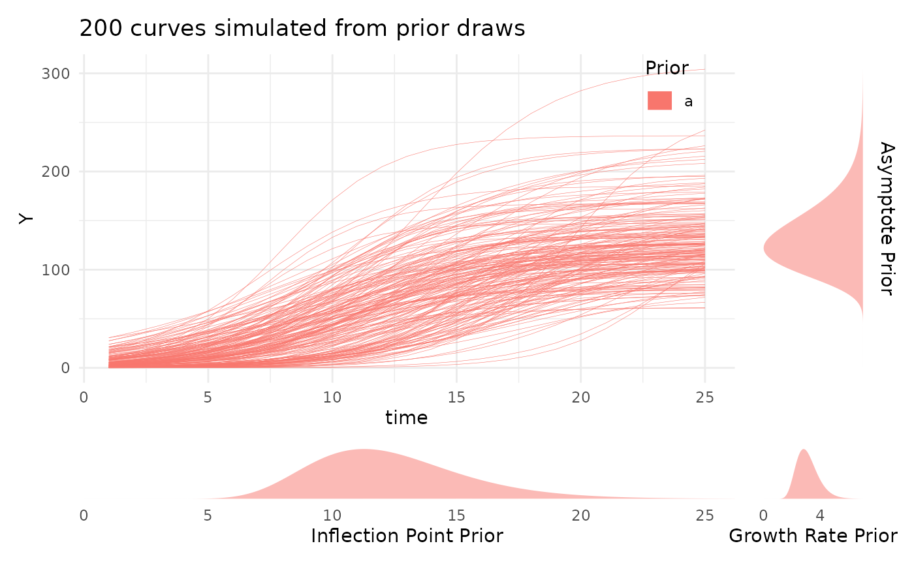
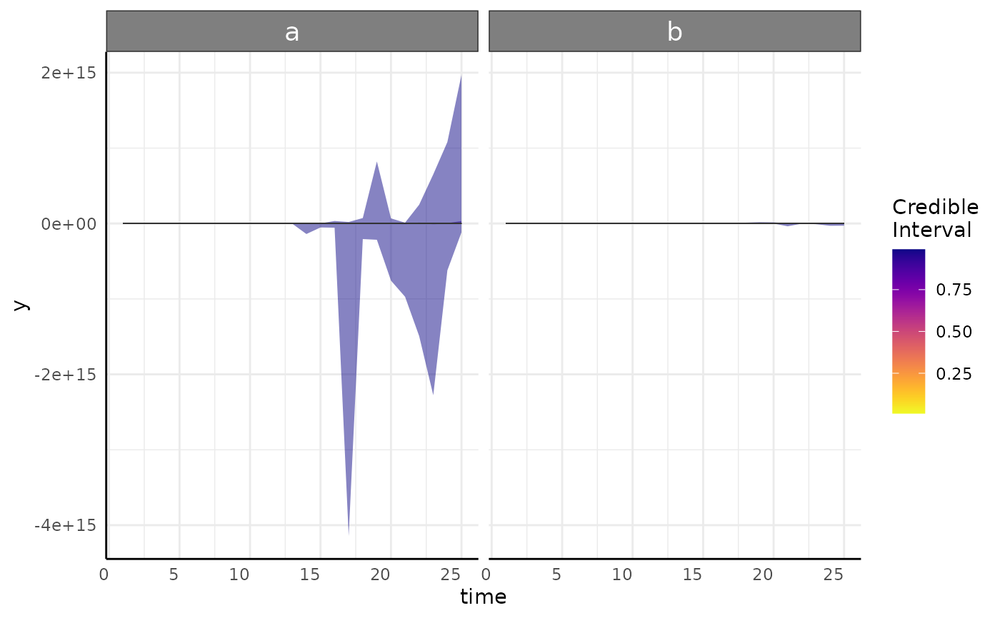

Function to help fulfill elements of the Bayesian Analysis Reporting Guidelines.
Source:R/barg.R
barg.RdThe Bayesian Analysis Reporting Guidelines were put forward by Kruschke (https://www.nature.com/articles/s41562-021-01177-7) to aide in reproducibility and documentation of Bayesian statistical analyses that are sometimes unfamiliar to reviewers or scientists. The purpose of this function is to summarize goodness of fit metrics from one or more Bayesian models made by growthSS and fitGrowth. See details for explanations of those metrics and the output.
Arguments
- fit
The brmsfit object or a list of brmsfit objects in the case that you split models to run on subsets of the data for computational simplicity.
- ss
The growthSS output used to specify the model. If fit is a list then this can either be one growthSS list in which case the priors are assumed to be the same for each model or it can be a list of the same length as fit. Note that the only parts of this which are used are the
call$startwhich is expected to be a call,pcvrForm, anddflist elements, so if you have a list of brmsfit objects and no ss object you can specify a stand-in list. This can also be left NULL (the default) and posterior predictive plots and prior predictive plots will not be made.
Value
A named list containing Rhat, ESS, NEFF, and Prior/Posterior Predictive plots. See details for interpretation.
Details
General: This includes chain number, length, and total divergent transitions per model. Divergent transitions are a marker that the MCMC had something go wrong. Conceptually it may be helpful to think about rolling a marble over a 3D curve then having the marble suddenly jolt in an unexpected direction, something happened that suggests a problem/misunderstood surface. In practice you want extremely few (ideally no) divergences. If you do have divergences then consider specifying more control parameters (see brms::brm or examples for fitGrowth). If the problem persists then the model may need to be simplified. For more information on MCMC and divergence see the stan manual (https://mc-stan.org/docs/2_19/reference-manual/divergent-transitions).
ESS: ESS stands for Effective Sample Size and is a goodness of fit metric that approximates the number of independent replicates that would equate to the same amount of information as the (autocorrelated) MCMC iterations. ESS of 1000+ is often considered as a pretty stable value, but more is better. Still, 100 per chain may be plenty depending on your applications and the inference you wish to do. One of the benefits to using lots of chains and/or longer chains is that you will get more complete information and that benefit will be shown by a larger ESS. This is separated into "bulk" and "tail" to represent the middle and tails of the posterior distribution, since those can sometimes have very different sampling behavior. A summary and the total values are returned, with the summary being useful if several models are included in a list for fit argument
Rhat: Rhat is a measure of "chain mixture". It compares the between vs within chain values to assess how well the chains mixed. If chains did not mix well then Rhat will be greater than 1, with 1.05 being a broadly agreed upon cutoff to signify a problem. Running longer chains should result in lower Rhat values. The default in brms is to run 4 chains, partially to ensure that there is a good chance to check that the chains mixed well via Rhat. A summary and the total values are returned, with the summary being useful if several models are included in a list for fit argument
NEFF: NEFF is the NEFF ratio (Effective Sample Size over Total MCMC Sample Size). Values greater than 0.5 are generally considered good, but there is a consensus that lower can be fine down to about 0.1. A summary and the total values are returned, with the summary being useful if several models are included in a list for fit argument
priorPredictive: A plot of data simulated from the prior using plotPrior. This should generate data that is biologically plausible for your situation, but it will probably be much more variable than your data. That is the effect of the mildly informative thick tailed lognormal priors. If you specified non-default style priors then this currently will not work.
posteriorPredictive: A plot of each model's posterior predictive interval over time. This is the same as plots returned from growthPlot and shows 1-99 coming to a mean yellow trend line. These should encompass the overwhelming majority of your data and ideally match the variance pattern that you see in your data. If parts of the predicted interval are biologically impossible (area below 0, percentage about 100 model should be reconsidered.
Examples
# \donttest{
simdf <- growthSim("logistic",
n = 20, t = 25,
params = list("A" = c(200, 160), "B" = c(13, 11), "C" = c(3, 3.5))
)
ss <- growthSS(
model = "logistic", form = y ~ time | id / group, sigma = "logistic",
df = simdf, start = list("A" = 130, "B" = 12, "C" = 3,
"sigmaA" = 20, "sigmaB" = 10, "sigmaC" = 2), type = "brms"
)
fit_test <- fitGrowth(ss,
iter = 600, cores = 1, chains = 1, backend = "cmdstanr",
sample_prior = "only" # only sampling from prior for speed
)
#> Start sampling
#> Init values were only set for a subset of parameters.
#> Missing init values for the following parameters:
#> Intercept_nu
#> Running MCMC with 1 chain...
#>
#> Chain 1 Iteration: 1 / 600 [ 0%] (Warmup)
#> Chain 1 Iteration: 100 / 600 [ 16%] (Warmup)
#> Chain 1 Iteration: 200 / 600 [ 33%] (Warmup)
#> Chain 1 Iteration: 300 / 600 [ 50%] (Warmup)
#> Chain 1 Iteration: 301 / 600 [ 50%] (Sampling)
#> Chain 1 Iteration: 400 / 600 [ 66%] (Sampling)
#> Chain 1 Iteration: 500 / 600 [ 83%] (Sampling)
#> Chain 1 Iteration: 600 / 600 [100%] (Sampling)
#> Chain 1 finished in 0.0 seconds.
barg(fit_test, ss)
#> Warning: The ESS has been capped to avoid unstable estimates.
#> Warning: The ESS has been capped to avoid unstable estimates.
#> Warning: The ESS has been capped to avoid unstable estimates.
#> Warning: The ESS has been capped to avoid unstable estimates.
#> Warning: The ESS has been capped to avoid unstable estimates.
#> Warning: The ESS has been capped to avoid unstable estimates.
#> Warning: The ESS has been capped to avoid unstable estimates.
#> Warning: The ESS has been capped to avoid unstable estimates.
#> Warning: The ESS has been capped to avoid unstable estimates.
#> Warning: The ESS has been capped to avoid unstable estimates.
#> Warning: Coercing LHS to a list
#> Warning: The ESS has been capped to avoid unstable estimates.
#> Warning: The ESS has been capped to avoid unstable estimates.
#> Warning: The ESS has been capped to avoid unstable estimates.
#> Warning: The ESS has been capped to avoid unstable estimates.
#> Warning: The ESS has been capped to avoid unstable estimates.
#> Warning: The ESS has been capped to avoid unstable estimates.
#> Warning: The ESS has been capped to avoid unstable estimates.
#> Warning: The ESS has been capped to avoid unstable estimates.
#> Warning: The ESS has been capped to avoid unstable estimates.
#> Warning: The ESS has been capped to avoid unstable estimates.
#> Warning: Coercing LHS to a list
#> Warning: The ESS has been capped to avoid unstable estimates.
#> Warning: The ESS has been capped to avoid unstable estimates.
#> Warning: The ESS has been capped to avoid unstable estimates.
#> Warning: The ESS has been capped to avoid unstable estimates.
#> Warning: The ESS has been capped to avoid unstable estimates.
#> Warning: The ESS has been capped to avoid unstable estimates.
#> Warning: The ESS has been capped to avoid unstable estimates.
#> Warning: The ESS has been capped to avoid unstable estimates.
#> Warning: The ESS has been capped to avoid unstable estimates.
#> Warning: The ESS has been capped to avoid unstable estimates.
#> $General
#> chains iter num.divergent model
#> 1 1 600 0 1
#>
#> $Rhat
#> $Rhat$summary
#> b_nu_Intercept b_A_groupa b_A_groupb b_B_groupa b_B_groupb b_C_groupa
#> Min. 0.9990086 0.9983509 1.000119 1.001725 0.9980436 0.9976811
#> 1st Qu. 0.9990086 0.9983509 1.000119 1.001725 0.9980436 0.9976811
#> Median 0.9990086 0.9983509 1.000119 1.001725 0.9980436 0.9976811
#> Mean 0.9990086 0.9983509 1.000119 1.001725 0.9980436 0.9976811
#> 3rd Qu. 0.9990086 0.9983509 1.000119 1.001725 0.9980436 0.9976811
#> Max. 0.9990086 0.9983509 1.000119 1.001725 0.9980436 0.9976811
#> b_C_groupb b_sigmaA_groupa b_sigmaA_groupb b_sigmaB_groupa
#> Min. 1.002824 0.9999129 1.018384 1.010672
#> 1st Qu. 1.002824 0.9999129 1.018384 1.010672
#> Median 1.002824 0.9999129 1.018384 1.010672
#> Mean 1.002824 0.9999129 1.018384 1.010672
#> 3rd Qu. 1.002824 0.9999129 1.018384 1.010672
#> Max. 1.002824 0.9999129 1.018384 1.010672
#> b_sigmaB_groupb b_sigmaC_groupa b_sigmaC_groupb lprior lp__
#> Min. 0.9970819 1.000047 0.9999776 1.032077 1.035843
#> 1st Qu. 0.9970819 1.000047 0.9999776 1.032077 1.035843
#> Median 0.9970819 1.000047 0.9999776 1.032077 1.035843
#> Mean 0.9970819 1.000047 0.9999776 1.032077 1.035843
#> 3rd Qu. 0.9970819 1.000047 0.9999776 1.032077 1.035843
#> Max. 0.9970819 1.000047 0.9999776 1.032077 1.035843
#>
#> $Rhat$complete
#> $Rhat$complete[[1]]
#> [1] 0.9990086
#>
#> $Rhat$complete[[2]]
#> [1] 0.9983509
#>
#> $Rhat$complete[[3]]
#> [1] 1.000119
#>
#> $Rhat$complete[[4]]
#> [1] 1.001725
#>
#> $Rhat$complete[[5]]
#> [1] 0.9980436
#>
#> $Rhat$complete[[6]]
#> [1] 0.9976811
#>
#> $Rhat$complete[[7]]
#> [1] 1.002824
#>
#> $Rhat$complete[[8]]
#> [1] 0.9999129
#>
#> $Rhat$complete[[9]]
#> [1] 1.018384
#>
#> $Rhat$complete[[10]]
#> [1] 1.010672
#>
#> $Rhat$complete[[11]]
#> [1] 0.9970819
#>
#> $Rhat$complete[[12]]
#> [1] 1.000047
#>
#> $Rhat$complete[[13]]
#> [1] 0.9999776
#>
#> $Rhat$complete[[14]]
#> [1] 1.032077
#>
#> $Rhat$complete[[15]]
#> [1] 1.035843
#>
#> $Rhat$complete$model
#> [1] 1
#>
#>
#>
#> $NEFF
#> $NEFF$summary
#> b_nu_Intercept b_A_groupa b_A_groupb b_B_groupa b_B_groupb b_C_groupa
#> Min. 0.5999418 0.7620409 0.759054 0.558659 0.8552654 0.9329927
#> 1st Qu. 0.5999418 0.7620409 0.759054 0.558659 0.8552654 0.9329927
#> Median 0.5999418 0.7620409 0.759054 0.558659 0.8552654 0.9329927
#> Mean 0.5999418 0.7620409 0.759054 0.558659 0.8552654 0.9329927
#> 3rd Qu. 0.5999418 0.7620409 0.759054 0.558659 0.8552654 0.9329927
#> Max. 0.5999418 0.7620409 0.759054 0.558659 0.8552654 0.9329927
#> b_C_groupb b_sigmaA_groupa b_sigmaA_groupb b_sigmaB_groupa
#> Min. 0.6368461 0.7938296 0.6711056 0.6330674
#> 1st Qu. 0.6368461 0.7938296 0.6711056 0.6330674
#> Median 0.6368461 0.7938296 0.6711056 0.6330674
#> Mean 0.6368461 0.7938296 0.6711056 0.6330674
#> 3rd Qu. 0.6368461 0.7938296 0.6711056 0.6330674
#> Max. 0.6368461 0.7938296 0.6711056 0.6330674
#> b_sigmaB_groupb b_sigmaC_groupa b_sigmaC_groupb lprior lp__
#> Min. 0.8316133 0.9318118 0.5181463 0.3335514 0.2921756
#> 1st Qu. 0.8316133 0.9318118 0.5181463 0.3335514 0.2921756
#> Median 0.8316133 0.9318118 0.5181463 0.3335514 0.2921756
#> Mean 0.8316133 0.9318118 0.5181463 0.3335514 0.2921756
#> 3rd Qu. 0.8316133 0.9318118 0.5181463 0.3335514 0.2921756
#> Max. 0.8316133 0.9318118 0.5181463 0.3335514 0.2921756
#>
#> $NEFF$complete
#> $NEFF$complete[[1]]
#> [1] 0.5999418
#>
#> $NEFF$complete[[2]]
#> [1] 0.7620409
#>
#> $NEFF$complete[[3]]
#> [1] 0.759054
#>
#> $NEFF$complete[[4]]
#> [1] 0.558659
#>
#> $NEFF$complete[[5]]
#> [1] 0.8552654
#>
#> $NEFF$complete[[6]]
#> [1] 0.9329927
#>
#> $NEFF$complete[[7]]
#> [1] 0.6368461
#>
#> $NEFF$complete[[8]]
#> [1] 0.7938296
#>
#> $NEFF$complete[[9]]
#> [1] 0.6711056
#>
#> $NEFF$complete[[10]]
#> [1] 0.6330674
#>
#> $NEFF$complete[[11]]
#> [1] 0.8316133
#>
#> $NEFF$complete[[12]]
#> [1] 0.9318118
#>
#> $NEFF$complete[[13]]
#> [1] 0.5181463
#>
#> $NEFF$complete[[14]]
#> [1] 0.3335514
#>
#> $NEFF$complete[[15]]
#> [1] 0.2921756
#>
#> $NEFF$complete$model
#> [1] 1
#>
#>
#>
#> $ESS
#> $ESS$summary
#> A_groupa A_groupb B_groupa B_groupb C_groupa C_groupb
#> Bulk_ESS.Min. 743.1364 743.1364 703.1193 743.1364 743.1364 743.1364
#> Bulk_ESS.1st Qu. 743.1364 743.1364 703.1193 743.1364 743.1364 743.1364
#> Bulk_ESS.Median 743.1364 743.1364 703.1193 743.1364 743.1364 743.1364
#> Bulk_ESS.Mean 743.1364 743.1364 703.1193 743.1364 743.1364 743.1364
#> Bulk_ESS.3rd Qu. 743.1364 743.1364 703.1193 743.1364 743.1364 743.1364
#> Bulk_ESS.Max. 743.1364 743.1364 703.1193 743.1364 743.1364 743.1364
#> Tail_ESS.Min. 228.6123 227.7162 167.5977 256.5796 279.8978 191.0538
#> Tail_ESS.1st Qu. 228.6123 227.7162 167.5977 256.5796 279.8978 191.0538
#> Tail_ESS.Median 228.6123 227.7162 167.5977 256.5796 279.8978 191.0538
#> Tail_ESS.Mean 228.6123 227.7162 167.5977 256.5796 279.8978 191.0538
#> Tail_ESS.3rd Qu. 228.6123 227.7162 167.5977 256.5796 279.8978 191.0538
#> Tail_ESS.Max. 228.6123 227.7162 167.5977 256.5796 279.8978 191.0538
#> nu_Intercept sigmaA_groupa sigmaA_groupb sigmaB_groupa
#> Bulk_ESS.Min. 743.1364 743.1364 743.1364 743.1364
#> Bulk_ESS.1st Qu. 743.1364 743.1364 743.1364 743.1364
#> Bulk_ESS.Median 743.1364 743.1364 743.1364 743.1364
#> Bulk_ESS.Mean 743.1364 743.1364 743.1364 743.1364
#> Bulk_ESS.3rd Qu. 743.1364 743.1364 743.1364 743.1364
#> Bulk_ESS.Max. 743.1364 743.1364 743.1364 743.1364
#> Tail_ESS.Min. 179.9825 238.1489 201.3317 189.9202
#> Tail_ESS.1st Qu. 179.9825 238.1489 201.3317 189.9202
#> Tail_ESS.Median 179.9825 238.1489 201.3317 189.9202
#> Tail_ESS.Mean 179.9825 238.1489 201.3317 189.9202
#> Tail_ESS.3rd Qu. 179.9825 238.1489 201.3317 189.9202
#> Tail_ESS.Max. 179.9825 238.1489 201.3317 189.9202
#> sigmaB_groupb sigmaC_groupa sigmaC_groupb
#> Bulk_ESS.Min. 701.1075 644.0167 743.1364
#> Bulk_ESS.1st Qu. 701.1075 644.0167 743.1364
#> Bulk_ESS.Median 701.1075 644.0167 743.1364
#> Bulk_ESS.Mean 701.1075 644.0167 743.1364
#> Bulk_ESS.3rd Qu. 701.1075 644.0167 743.1364
#> Bulk_ESS.Max. 701.1075 644.0167 743.1364
#> Tail_ESS.Min. 249.4840 279.5435 155.4439
#> Tail_ESS.1st Qu. 249.4840 279.5435 155.4439
#> Tail_ESS.Median 249.4840 279.5435 155.4439
#> Tail_ESS.Mean 249.4840 279.5435 155.4439
#> Tail_ESS.3rd Qu. 249.4840 279.5435 155.4439
#> Tail_ESS.Max. 249.4840 279.5435 155.4439
#>
#> $ESS$complete
#> par Bulk_ESS Tail_ESS model
#> 1 nu_Intercept 743.1364 179.9825 1
#> 2 A_groupa 743.1364 228.6123 1
#> 3 A_groupb 743.1364 227.7162 1
#> 4 B_groupa 703.1193 167.5977 1
#> 5 B_groupb 743.1364 256.5796 1
#> 6 C_groupa 743.1364 279.8978 1
#> 7 C_groupb 743.1364 191.0538 1
#> 8 sigmaA_groupa 743.1364 238.1489 1
#> 9 sigmaA_groupb 743.1364 201.3317 1
#> 10 sigmaB_groupa 743.1364 189.9202 1
#> 11 sigmaB_groupb 701.1075 249.4840 1
#> 12 sigmaC_groupa 644.0167 279.5435 1
#> 13 sigmaC_groupb 743.1364 155.4439 1
#>
#>
#> $priorPredictive
#> $priorPredictive[[1]]

#>
#>
#> $posteriorPredictive
#> $posteriorPredictive[[1]]

#>
#>
fit_2 <- fit_test
fit_list <- list(fit_test, fit_2)
x <- barg(fit_list, list(ss, ss))
#> Warning: The ESS has been capped to avoid unstable estimates.
#> Warning: The ESS has been capped to avoid unstable estimates.
#> Warning: The ESS has been capped to avoid unstable estimates.
#> Warning: The ESS has been capped to avoid unstable estimates.
#> Warning: The ESS has been capped to avoid unstable estimates.
#> Warning: The ESS has been capped to avoid unstable estimates.
#> Warning: The ESS has been capped to avoid unstable estimates.
#> Warning: The ESS has been capped to avoid unstable estimates.
#> Warning: The ESS has been capped to avoid unstable estimates.
#> Warning: The ESS has been capped to avoid unstable estimates.
#> Warning: The ESS has been capped to avoid unstable estimates.
#> Warning: The ESS has been capped to avoid unstable estimates.
#> Warning: The ESS has been capped to avoid unstable estimates.
#> Warning: The ESS has been capped to avoid unstable estimates.
#> Warning: The ESS has been capped to avoid unstable estimates.
#> Warning: The ESS has been capped to avoid unstable estimates.
#> Warning: The ESS has been capped to avoid unstable estimates.
#> Warning: The ESS has been capped to avoid unstable estimates.
#> Warning: The ESS has been capped to avoid unstable estimates.
#> Warning: The ESS has been capped to avoid unstable estimates.
#> Warning: Coercing LHS to a list
#> Warning: The ESS has been capped to avoid unstable estimates.
#> Warning: The ESS has been capped to avoid unstable estimates.
#> Warning: The ESS has been capped to avoid unstable estimates.
#> Warning: The ESS has been capped to avoid unstable estimates.
#> Warning: The ESS has been capped to avoid unstable estimates.
#> Warning: The ESS has been capped to avoid unstable estimates.
#> Warning: The ESS has been capped to avoid unstable estimates.
#> Warning: The ESS has been capped to avoid unstable estimates.
#> Warning: The ESS has been capped to avoid unstable estimates.
#> Warning: The ESS has been capped to avoid unstable estimates.
#> Warning: The ESS has been capped to avoid unstable estimates.
#> Warning: The ESS has been capped to avoid unstable estimates.
#> Warning: The ESS has been capped to avoid unstable estimates.
#> Warning: The ESS has been capped to avoid unstable estimates.
#> Warning: The ESS has been capped to avoid unstable estimates.
#> Warning: The ESS has been capped to avoid unstable estimates.
#> Warning: The ESS has been capped to avoid unstable estimates.
#> Warning: The ESS has been capped to avoid unstable estimates.
#> Warning: The ESS has been capped to avoid unstable estimates.
#> Warning: The ESS has been capped to avoid unstable estimates.
#> Warning: Coercing LHS to a list
#> Warning: The ESS has been capped to avoid unstable estimates.
#> Warning: The ESS has been capped to avoid unstable estimates.
#> Warning: The ESS has been capped to avoid unstable estimates.
#> Warning: The ESS has been capped to avoid unstable estimates.
#> Warning: The ESS has been capped to avoid unstable estimates.
#> Warning: The ESS has been capped to avoid unstable estimates.
#> Warning: The ESS has been capped to avoid unstable estimates.
#> Warning: The ESS has been capped to avoid unstable estimates.
#> Warning: The ESS has been capped to avoid unstable estimates.
#> Warning: The ESS has been capped to avoid unstable estimates.
#> Warning: The ESS has been capped to avoid unstable estimates.
#> Warning: The ESS has been capped to avoid unstable estimates.
#> Warning: The ESS has been capped to avoid unstable estimates.
#> Warning: The ESS has been capped to avoid unstable estimates.
#> Warning: The ESS has been capped to avoid unstable estimates.
#> Warning: The ESS has been capped to avoid unstable estimates.
#> Warning: The ESS has been capped to avoid unstable estimates.
#> Warning: The ESS has been capped to avoid unstable estimates.
#> Warning: The ESS has been capped to avoid unstable estimates.
#> Warning: The ESS has been capped to avoid unstable estimates.
# }